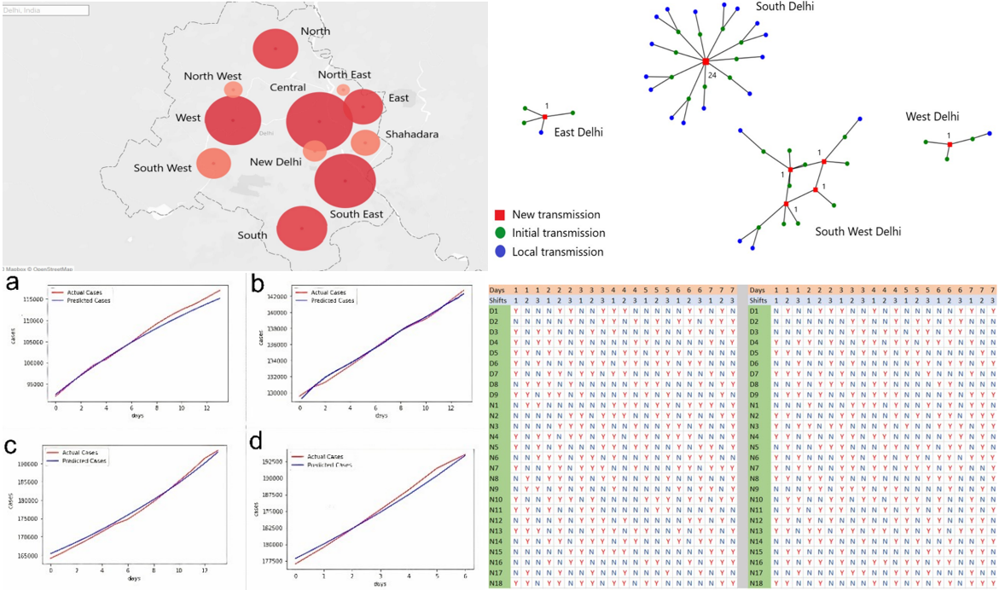

Greetings!
To keep things simple:
- I am pursuing my master of science in Computer Science at NYU - Courant(CIMS).
- I like to Code, Debug, Analyze, and build the optimal solutions for various succumbed scenarios. I get immense joy from quality time spent with my family and friends. Organizing excursions and embarking on vacations are activities that I hold dear.
Career
- To start, Closer Match GP, is a startup in London. The aim is to quickly and effectively connect General Practitioners (GPs) with openings. I worked on the data aspect, where I built and maintained a database, containing all the GP-related data.
- Then, I was given the opportunity to work at TenderCuts, a meat business in India, where I developed a food packaging system that reduced paper usage, a system for tracking inventories using Google Data Studio, and EDA on performance metrics.
May 2025 - Aug 2025
Aug 2022 - Aug 2024
Sep 2021 - Jul 2022
2021 (Mini-Project)
- shell point
- interplay point
Projects
Here are the projects successfully completed to date. You can access comprehensive project descriptions by selecting the respective title. You can also view all the projects here.
- Credit Guard
- COVID-19 Health Records
- Pricing Strategies
- Buy from farmers
- Cartoon Features
- The Freebird
- Unemployment Issue in India
- LifeTrack (Time to Event)
- Inter Process Communication
- Draw in air-AI based Canvas
- Grocery Store App
- Clap Switch
- Comparison Study (UDP and TCP)
- Drone- Initiation
- The 360 Panel
Patent
Writing Pad (Python Based Motion Sensing Digital Writing Pad)
The Motion Based Digital writing pad which allows the user to freely cohort his/her ideas with the help of any feasible stylus directly onto the screen. It significantly reduces the expenditure by utilising deep learning techniques for hand motion detection. The system connects the most backward and economically deprived section of the community to directly interact with modern day advancements by not only being a spectator but an active participant.
Publications
AI for Factor Investing: A Comprehensive Survey
This survey explores AI-driven advancements in factor investing, including machine learning for pattern recognition, reinforcement learning for adaptive portfolio management, and algorithmic trading for execution, while addressing challenges like overfitting and model interpretability to enhance precision in asset management.
Scheduling for Healthcare Centre for COVID-19: Deep Learning and Genetic Algorithmic Approach
The research covers different key issues to be taken care of in pandemic situations i.e. detection and prediction of cases and then scheduling for health care centers and medical staff in a single model that can easily be made as a web application.
Figure: Spotlight on cases, Network Model, RNN Model, Scheduling

Certifications
You can view all the certificates here !!
- [Microsoft] Azure AI Fundamentals (AI - 900)
- [Microsoft] Azure Data Fundamentals (DP - 100)
- [Nasscom] Associate Analytics
- [Coursera] University of Michigan - Python
- [Coursera] UC Davis - SQL for Data Science
- [Coursera] Git + GitHub for Open Source Collaboration
- [Coursera] UC Davis - Visual Analytics with Tableau
- [IBM] Cognitive Class.ai - Big Data
Co-Curriculars
- During my time in school, I participated in the world's largest practical session, in which 2000 students had to perform two chemistry experiments to break a Guinness World Record (Link)
- I have been actively engaged in teaching, both professionally and through volunteering. I take recitations for Discrete Mathematics and Data Structures at NYU. And as a member of the RHA (Robin Hood Army), I teach basic English to those in need.